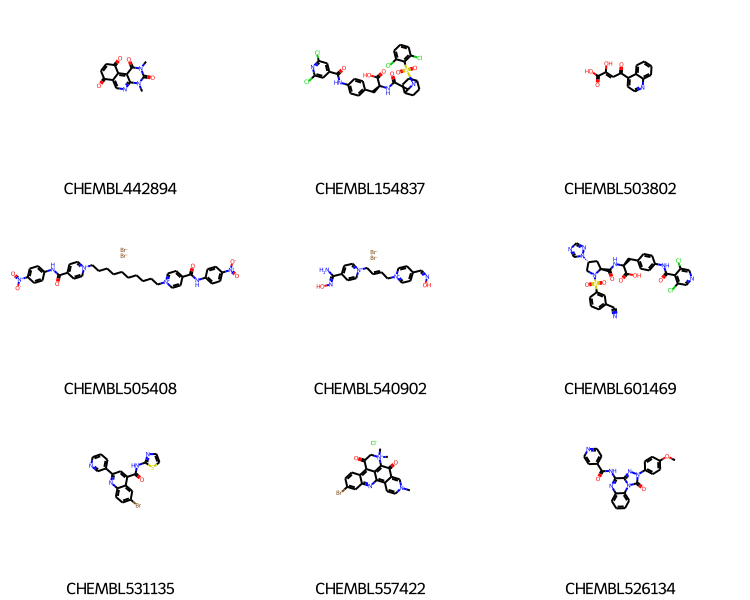
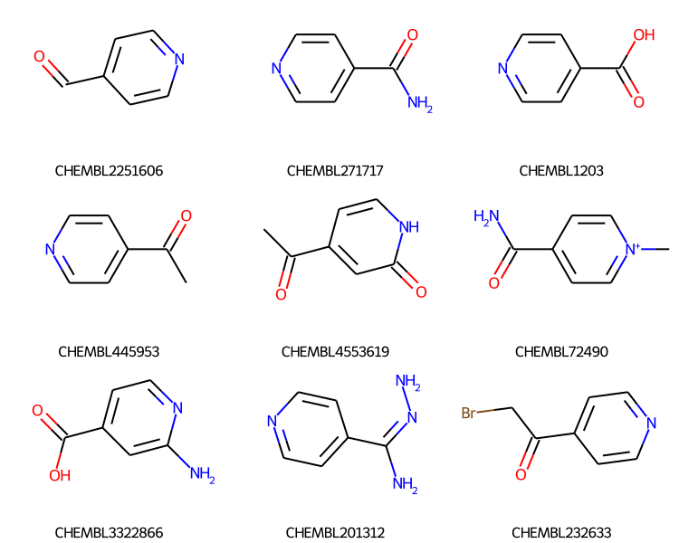
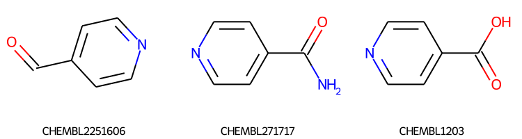
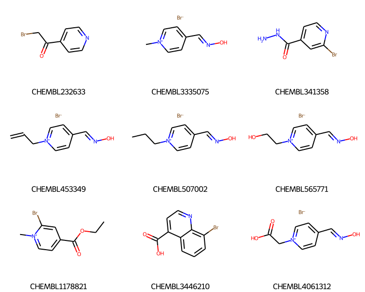

Changing the search order, refining searches, and assigning keys
Published
December 20, 2021
Earlier this year I did a blog post on “Generalized substructure search” with the RDKit. That demonstrated how to use some advanced query features like link nodes, variable attachment points, and tautomer insensitivity to search through the compounds from ChEMBL 29 with the RDKit’s SubstructLibrary.
This post uses the same ChEMBL 29 SubstructLibrary to demonstrate a couple of new features which were added in the 2021.09 release of the RDKit: 1. Changing the search order 2. Specifying which compounds are actually searched 3. Saving a molecule key (or name) together with the molecules in the SubstructLibrary
Here’s the code to build the SubstructLibrary from the sdf file distributed by the ChEMBL team. This uses a feature added in RDKit v2021.09 to allow a molecule key (or name) to be stored with the molecules in a SubstructLibrary.
Executing this takes about 45 minutes on my machine.
RDLogger.DisableLog(“rdApp.warning”)
molholder = rdSubstructLibrary.CachedTrustedSmilesMolHolder() patts = rdSubstructLibrary.TautomerPatternHolder() # this will automatically grab the “_Name” property for each molecule # in the ChEMBL SD file this contains the ChEMBL ID for the molecules. keys = rdSubstructLibrary.KeyFromPropHolder() slib = rdSubstructLibrary.SubstructLibrary(molholder,patts,keys) t1 = time.time() with gzip.GzipFile(‘/home/glandrum/Downloads/chembl_29.sdf.gz’) as gz, Chem.ForwardSDMolSupplier(gz) as suppl: nDone = 0 for m in suppl: if m is None: continue # skip huge molecules if m.GetNumHeavyAtoms()>75: continue slib.AddMol(m) nDone += 1 if not nDone%50000: print(f’ did {nDone} in {time.time()-t1:.2f}s’) with open(‘./results/chembl29_ssslib.pkl’,‘wb+’) as outf: pickle.dump(slib,outf) print(f’That took {time.time()-t1:.2f}s in total.’) with open(‘./results/chembl29_ssslib.pkl’,‘wb+’) as outf: pickle.dump(slib,outf)
We’re going to use the number of heavy atoms to determine the search order. Since that takes a while, go ahead and pre-calculate those values and store them in the same pickle file as the SubstructLibrary:
holder = slib.GetMolHolder() nats = sorted([(holder.GetMol(x).GetNumHeavyAtoms(),x) for x in range(len(slib))]) order = [y for x,y in nats] # append that to the pickle file with the substruct lib: with open(‘./results/chembl29_ssslib.pkl’,‘ab’) as outf: pickle.dump(order,outf)
Read in the saved data:
withopen('./results/chembl29_ssslib.pkl','rb') as inf: slib = pickle.load(inf) nat_order = pickle.load(inf)
Let’s look at doing a search. We also take advantage of the SubstructLibrary’s KeyHolder (a new feature in v2021.09) to include the compound ChEMBL IDs in the results:
mids = slib.GetMatches(qry)print(f'{len(mids)} results')ms = [slib.GetMolHolder().GetMol(x) for x in mids[:9]]legends = [slib.GetKeyHolder().GetKey(x) for x in mids[:9]]Draw.MolsToGridImage(ms,legends=legends,subImgSize=(250,200))
1000 results

One of the new features is that we can change the search order; this allows us to get the smallest molecules first (always a good idea with a substructure search).
Here we’re using the number of heavy atoms to set the search order:
slib.SetSearchOrder(nat_order)mids = slib.GetMatches(qry)print(f'{len(mids)} results')ms = [slib.GetMolHolder().GetMol(x) for x in mids[:9]]legends = [slib.GetKeyHolder().GetKey(x) for x in mids[:9]]Draw.MolsToGridImage(ms,legends=legends,subImgSize=(250,200))
1000 results

It’s important to note that we are not just sorting the results from the search here: we’re changing the order in which the search is done. So even though we’re only getting 1000 results (the default max number of results from the SubstructLibrary), we know that they are the 1000 smallest results.
So if we change the maximum number of results to three, we’ll get the same first three results:
slib.SetSearchOrder(nat_order)mids2 = slib.GetMatches(qry,maxResults=3)print(f'{len(mids2)} results')ms = [slib.GetMolHolder().GetMol(x) for x in mids2[:9]]legends = [slib.GetKeyHolder().GetKey(x) for x in mids2[:9]]Draw.MolsToGridImage(ms,legends=legends,subImgSize=(250,200))
3 results

We can also use the search order to limit the compounds we search. In this case I’m going to refine the results of the previous search and identify compounds which also contain Br:
slib.SetSearchOrder(mids)mids_new = slib.GetMatches(Chem.MolFromSmarts('[Br]'))print(f'{len(mids_new)} sub-results')ms = [slib.GetMolHolder().GetMol(x) for x in mids_new[:9]]legends = [slib.GetKeyHolder().GetKey(x) for x in mids_new[:9]]Draw.MolsToGridImage(ms,legends=legends,subImgSize=(250,200))
66 sub-results

Notice that the results are still coming back sorted by the number of heavy atoms. That’s because the IDs of the molecules being used for the search search is sorted.
We almost certainly ran up against the default limit on the number of results (1000 compounds) when doing the first search. Let’s loosen that to 50K. This will take longer since the first query ends up having to run through the entire database.
71.7 ms ± 710 µs per loop (mean ± std. dev. of 7 runs, 10 loops each)
And here’s the search time for going through the entire database (we only get 17K results here, so maxResults=50K corresponds to searching through the entire database):